Ujaval Gandhi
Ujaval GandhiIzrada interaktivnih mapa na platnu (QGIS3)¶
Ovaj tutorijal pokazuje kako da se objekti dinamički ažuriraju dok pomerate kursor u QGIS platnu. Implementiraćemo četkanje platna koristeći izraze kako bi objekti reagovali na kretanje kursora.
Pregled zadatka¶
Napravićemo mrežu QGIS ikona i primeniti zamenu definisanu podacima za rotaciju ikona kako bi ikone pratile kretanje kursora.
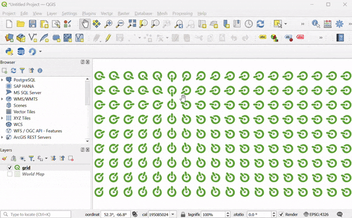Procedura¶
1. We will start by creating a grid. To make our grid with global extents, we can load the world map on the canvas. You can type world in the coordinates box at the bottom of the QGIS window and press Enter.
This is one of the several hidden easter eggs in QGIS. You can discover other easter eggs on our YouTube Channel.
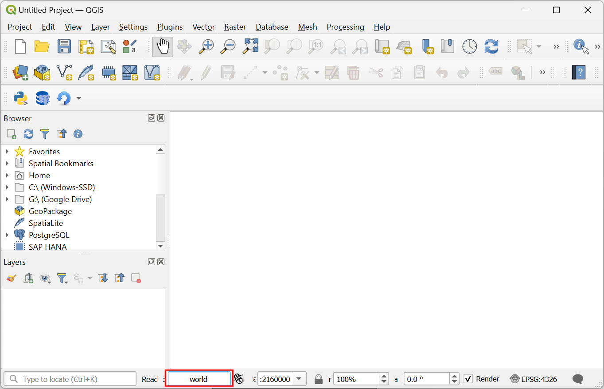
Novi sloj „Mapa sveta“ biće dodat na QGIS Panel Slojevi. Idite na .
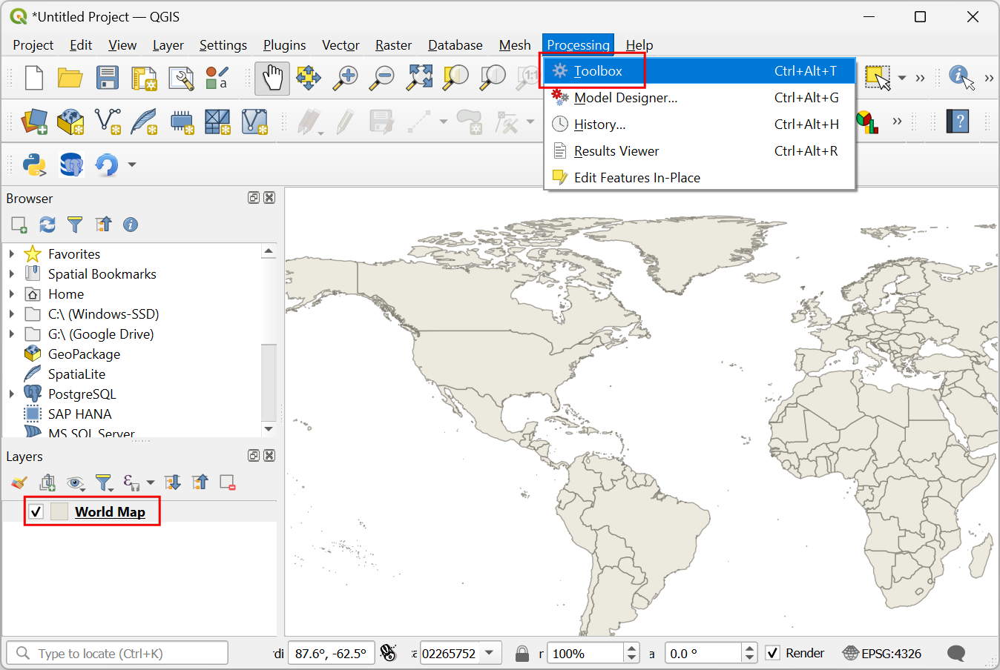
Pretražite i pronađite algoritam . Dvaput kliknite da biste ga otvorili.
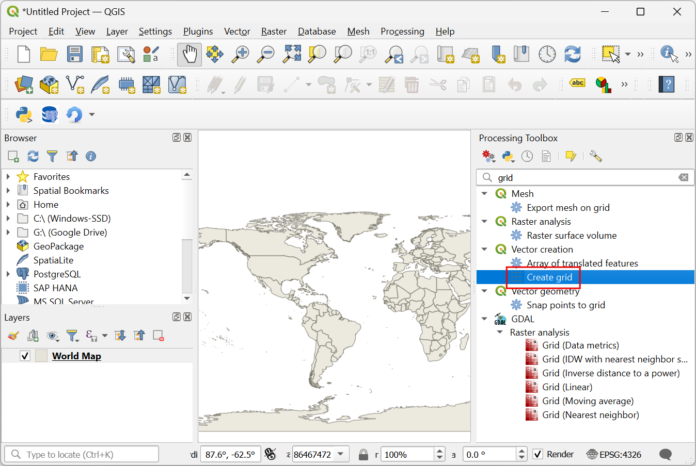
U dijalogu Kreiraj mrežu, kliknite na padajući meni .
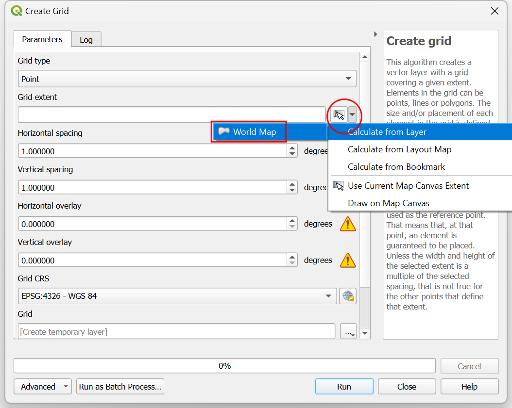
Zatim, podesite Horizontalni razmak i Vertikalni razmak na
20stepeni. Kliknite na dugme...pored Mreža i izaberite Sačuvaj u datoteku. Potražite fasciklu na računaru i unesite imegrid.gpkg. Kliknite na Pokreni.
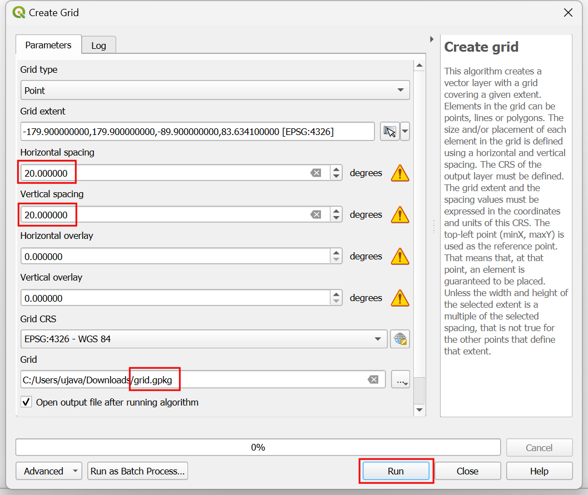
Biće dodat novi sloj „mreža“. Kliknite na dugme Otvori panel za stilizovanje slojeva u panelu Slojevi. Kliknite na Jednostavan marker.
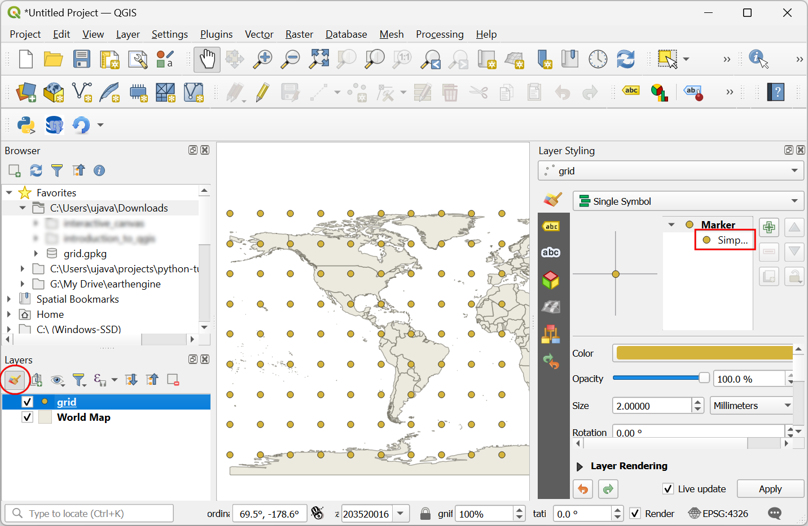
U padajućem meniju izaberite „SVG marker“ kao tip simbola.

Pomerite se nadole do odeljka SVG browser i izaberite fasciklu logos. Izaberite ikonu QGIS.
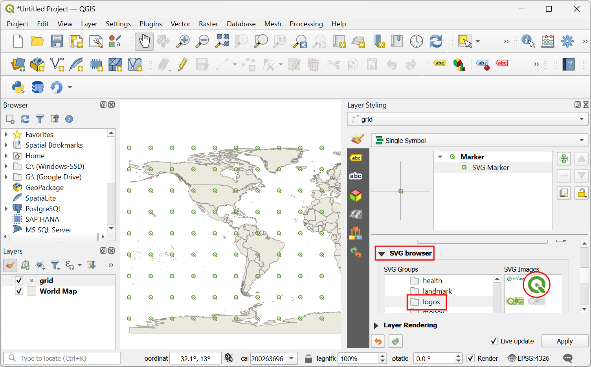
Pomerite se do opcije Size i podesite veličinu na
5.
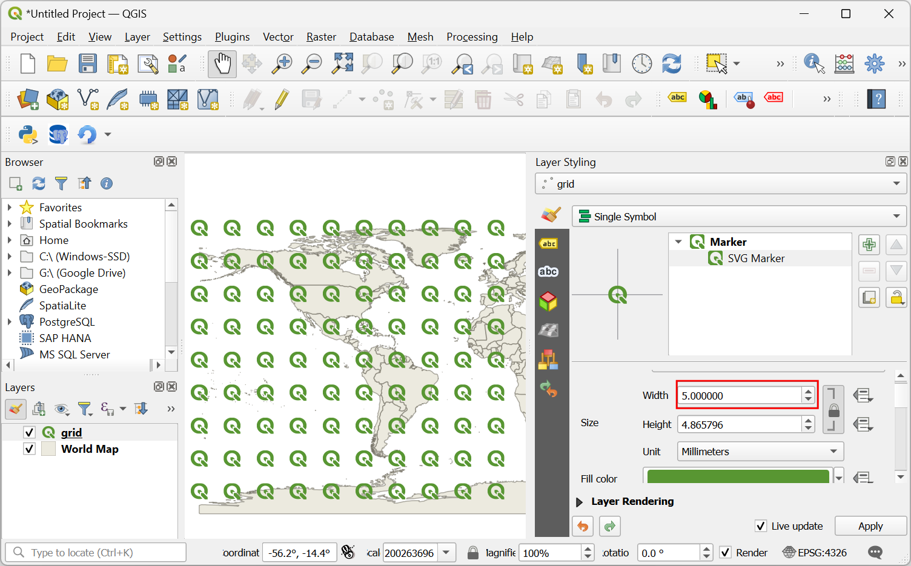
Zatim, pronađite opciju Rotacija i kliknite na dugme prepisivanje definisanih podataka. Izaberite Uredi….
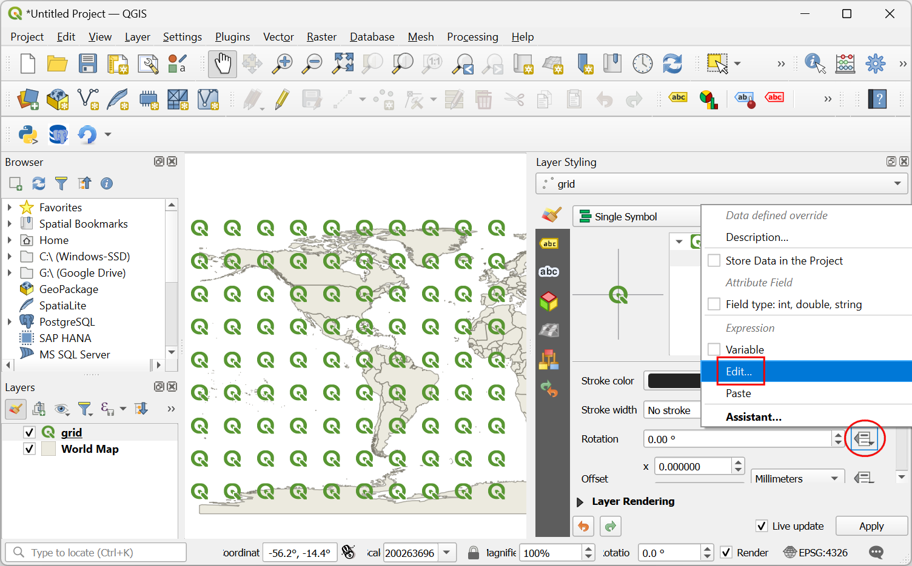
Dodaćemo izraz koji će dinamički izračunati rotaciju ikone na osnovu trenutne pozicije kursora. Pošto naša ikona pokazuje azimut od 135°, ovo će biti rotacija od 0. Kako se kursor pomera, izraz će izračunati azimutski ugao između ikone i položaja kursora i izračunati ugao za koji je potrebno rotirati da bi pokazivao na kursor. Unesite sledeći izraz i kliknite na OK.
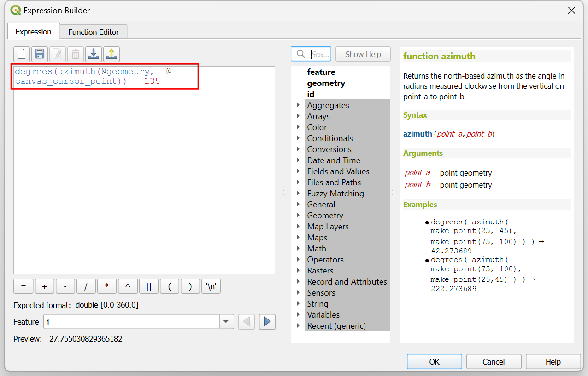degrees(azimuth(@geometry, @canvas_cursor_point)) - 135
Platno mape još uvek ne reaguje na kretanje kursora jer se ne osvežava osim ako ne pomerite mapu. Hajde da podesimo automatsko osvežavanje. Kliknite desnim tasterom miša na sloj „mreža“ i izaberite Svojstva.
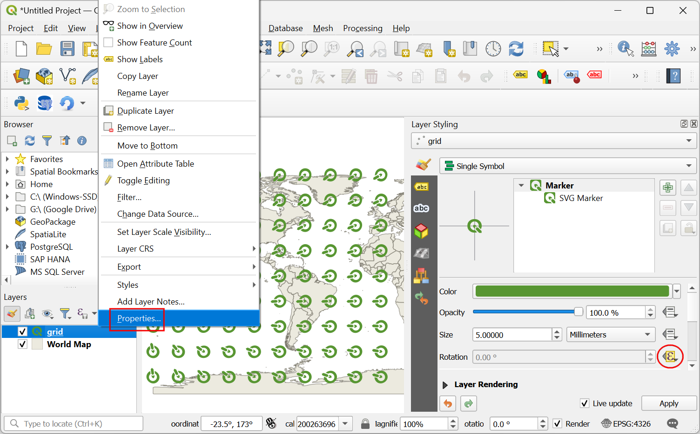
Pređite na karticu Rendering. Pomerite se nadole i označite Refresh layer at interval. Podesite interval na mali broj kao što je
0.1(tj. 100ms) i kliknite OK.
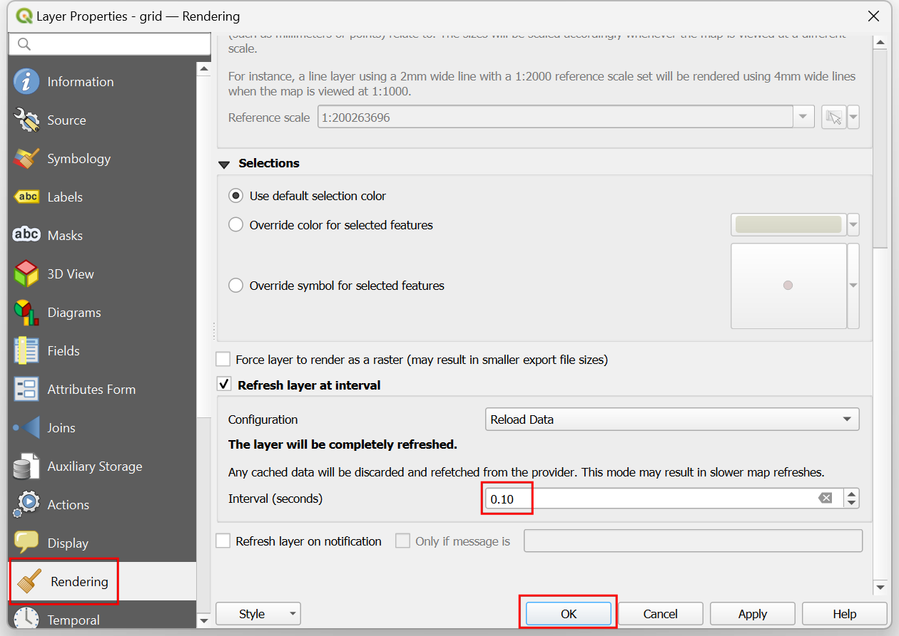
Nazad u glavnom prozoru, isključite sloj „Mapa sveta“. Sada, dok pomerate kursor, sve ikone će se rotirati tako da pokazuju ka vašoj trenutnoj poziciji.
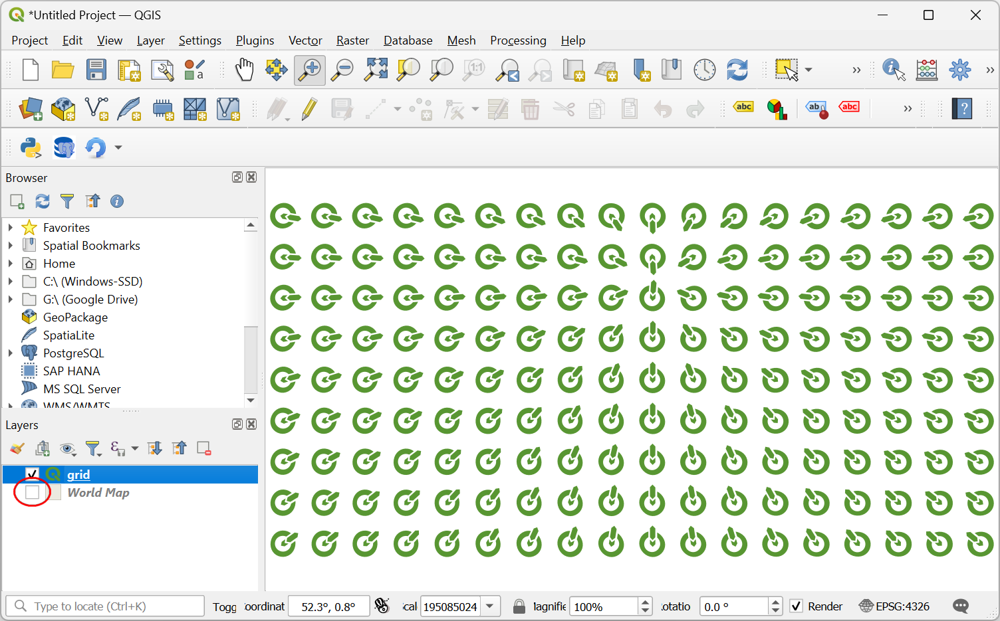
Ova zabavna vežba je osmišljena da vam pomogne da razumete kako da koristite promenljivu @canvas_cursor_point za pravljenje dinamičkih slojeva koji reaguju na kretanje miša.
If you want to give feedback or share your experience with this tutorial, please comment below. (requires GitHub account)